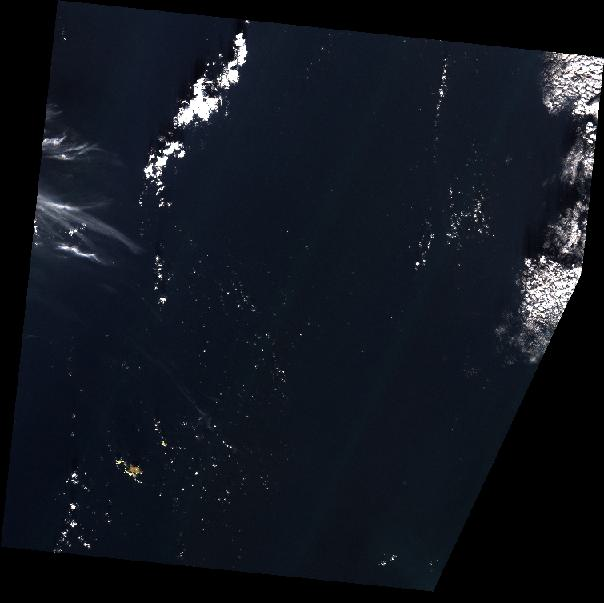

# Run this cell if pyeodh is not installed, or needs updating
!pip install --upgrade pyeodhResource Catalog
Description & purpose: This Notebook is designed to showcase the initial functionality of the Earth Observation Data Hub. It provides a snapshot of the Hub, the pyeodh API client and the various datasets as of March 2025.
Author(s): Alastair Graham, Dusan Figala
Date created: 2024-09-05
Date last modified: 2025-03-03
Licence: This notebook is licensed under Creative Commons Attribution-ShareAlike 4.0 International. The code is released using the BSD-2-Clause license.
Copyright (c) , All rights reserved.
Redistribution and use in source and binary forms, with or without modification, are permitted provided that the following conditions are met:
Redistributions of source code must retain the above copyright notice, this list of conditions and the following disclaimer. Redistributions in binary form must reproduce the above copyright notice, this list of conditions and the following disclaimer in the documentation and/or other materials provided with the distribution. THIS SOFTWARE IS PROVIDED BY THE COPYRIGHT HOLDERS AND CONTRIBUTORS “AS IS” AND ANY EXPRESS OR IMPLIED WARRANTIES, INCLUDING, BUT NOT LIMITED TO, THE IMPLIED WARRANTIES OF MERCHANTABILITY AND FITNESS FOR A PARTICULAR PURPOSE ARE DISCLAIMED. IN NO EVENT SHALL THE COPYRIGHT HOLDER OR CONTRIBUTORS BE LIABLE FOR ANY DIRECT, INDIRECT, INCIDENTAL, SPECIAL, EXEMPLARY, OR CONSEQUENTIAL DAMAGES (INCLUDING, BUT NOT LIMITED TO, PROCUREMENT OF SUBSTITUTE GOODS OR SERVICES; LOSS OF USE, DATA, OR PROFITS; OR BUSINESS INTERRUPTION) HOWEVER CAUSED AND ON ANY THEORY OF LIABILITY, WHETHER IN CONTRACT, STRICT LIABILITY, OR TORT (INCLUDING NEGLIGENCE OR OTHERWISE) ARISING IN ANY WAY OUT OF THE USE OF THIS SOFTWARE, EVEN IF ADVISED OF THE POSSIBILITY OF SUCH DAMAGE.
The first thing to do is ensure that the most recent version of pyeodh is installed on your system. It is good practice to run the following cell if you have not installed pyeodh or have not used it in a while.
Exploring the Resource Catalogue
Now we are ready to investigate the Resource Catalogue. First off, we need to import the pyeodh package.
# Import the Python API Client
import pyeodh
import pandas as pd
import hvplot.pandas
import urllib.request
from PIL import Image
from io import BytesIONext we need to create an instance of the Client, which is our entrypoint to EODH APIs. From there we can start to search the collections held within the platform.
# Connect to the Hub
# base_url can be changed to optionally specify a different server, such as test.eodatahub
client = pyeodh.Client(
base_url="https://staging.eodatahub.org.uk"
).get_catalog_service()
# Print a list of the collections held in the Resource Catalogue (their id and description).
# As the Resource Catalogue fills and development continues, the number of collections and the richness of their descriptions will increase
for collect in client.get_collections():
print(f"- {collect.id}: {collect.description}")- ukcp: Regional climate model projections produced as part of the UK Climate Projection 2018 (UKCP18) project. The data produced by the Met Office Hadley Centre provides information on changes in climate for the UK until 2080, downscaled to a high resolution (12km), helping to inform adaptation to a changing climate. The projections cover Europe and a 100 year period, 1981-2080, for a high emissions scenario, RCP8.5. Each projection provides an example of climate variability in a changing climate, which is consistent across climate variables at different times and spatial locations. This dataset contains 12km data for the United Kingdom, the Isle of Man and the Channel Islands provided on the Ordnance Survey's British National Grid.
- sentinel2_ard: These data have been created by the Department for Environment, Food and Rural Affairs (Defra) and Joint Nature Conservation Committee (JNCC) in order to cost-effectively provide high quality, Analysis Ready Data (ARD) for a wide range of applications. The dataset contains modified Copernicus Sentinel-2 (Level 1C data processed into a surface reflectance product using ARCSI software (Level 2)).
- sentinel1: This dataset contains level 1 Interferometric Wide swath (IW) Single Look Complex (SLC) C-band Synthetic Aperture Radar (SAR) data from the European Space Agency (ESA) Sentinel 1 series satellites. Sentinel 1 satellites provide continuous all-weather, day and night imaging radar data. The IW mode is the main operational mode. The IW mode supports single (HH or VV) and dual (HH+HV or VV+VH) polarisation.
- land_cover: As part of the ESA Land Cover Climate Change Initiative (CCI) project a new set of Global Land Cover Maps have been produced. These maps are available at 300m spatial resolution for each year between 1992 and 2015. Each pixel value corresponds to the classification of a land cover class defined based on the UN Land Cover Classification System (LCCS). The reliability of the classifications made are documented by the four quality flags (decribed further in the Product User Guide) that accompany these maps. Data are provided in both NetCDF and GeoTiff format.
- esacci-lst-s3b-night-monthly: This collection contains level L3C composited global land surface temperatures from SLSTR sensors on Sentinel-3B satellites. L3C composited data are derived from Night collated single sensor L3C data averaged in time onto a 0.01-degree space grid. The collection includes monthly daytime observations from various dates and sensors.
- esacci-lst-s3b-day-monthly: This collection contains level L3C composited global land surface temperatures from SLSTR sensors on Sentinel-3B satellites. L3C composited data are derived from Day collated single sensor L3C data averaged in time onto a 0.01-degree space grid. The collection includes monthly daytime observations from various dates and sensors.
- esacci-lst-s3a-night-monthly: This collection contains level L3C composited global land surface temperatures from SLSTR sensors on Sentinel-3A satellites. L3C composited data are derived from Night collated single sensor L3C data averaged in time onto a 0.01-degree space grid. The collection includes monthly daytime observations from various dates and sensors.
- esacci-lst-s3a-day-monthly: This collection contains level L3C composited global land surface temperatures from SLSTR sensors on Sentinel-3A satellites. L3C composited data are derived from Day collated single sensor L3C data averaged in time onto a 0.01-degree space grid. The collection includes monthly daytime observations from various dates and sensors.
- eocis-sst-cdrv3-climatology: ESA SST CCI Climatology v3.0
- eocis-sst-cdrv3: This dataset provides daily estimates of global sea surface temperature (SST) based on observations from multiple satellite sensors. Resolution: 5km. Available from 1980 onwards.The attributes of a catalogue are mapped to a series of properties. For instance, in the following cell we print the id, title and description for the supported-datasets catalogue.
# The next thing to do is find some open data
# Let's use the CEDA Sentinel 2 ARD
ceda_cat = client.get_catalog("supported-datasets/catalogs/ceda-stac-catalogue").get_collection('sentinel2_ard')
print("id: ", ceda_cat.id)
print("title: ", ceda_cat.title)
print("description: ", ceda_cat.description)id: sentinel2_ard
title: Sentinel 2 ARD
description: These data have been created by the Department for Environment, Food and Rural Affairs (Defra) and Joint Nature Conservation Committee (JNCC) in order to cost-effectively provide high quality, Analysis Ready Data (ARD) for a wide range of applications. The dataset contains modified Copernicus Sentinel-2 (Level 1C data processed into a surface reflectance product using ARCSI software (Level 2)).The Hub API endpoints are wrapped in methods inside pyeodh and are structured into classes, following the same logic as the underlying APIs. This means that, for example, to fetch a collection item we first need to get the collection from the resource catalogue. The following cell provedes a code example to do this.
# GET /stac-fastapi/collections/{collection_id}/items/{item_id}
cmip6 = client.get_catalog("supported-datasets/catalogs/ceda-stac-catalogue").get_collection('cmip6')
cmip6<pyeodh.resource_catalog.Collection at 0x7d41f8141b50>Some API responses are paginated (e.g. collection items), and you can simply iterate over them.
# GET /stac-fastapi/collections/cmip6/items
items = cmip6.get_items()
# Warning: this will take a long time for large catalogues such as cmip6
for item in items:
print(item.id)Now we want to access the first few items and see what they are called and how much cloud there is. the following code cell does this for 5 items.
# set a limit to the number of items to return
lim = 5
for i, item in enumerate(ceda_cat.get_items()):
if i >= lim:
break
print(i, " ", item.id)
print("Cloud cover: ", item.properties['eo:cloud_cover']) 0 neodc.sentinel_ard.data.sentinel_2.2023.11.21.S2B_20231121_latn536lonw0052_T30UUE_ORB123_20231121122846_utm30n_TM65
Cloud cover: 67.568010963291
1 neodc.sentinel_ard.data.sentinel_2.2023.11.20.S2A_20231120_latn563lonw0037_T30VVH_ORB037_20231120132420_utm30n_osgb
Cloud cover: 17.320411981252
2 neodc.sentinel_ard.data.sentinel_2.2023.11.20.S2A_20231120_latn546lonw0037_T30UVF_ORB037_20231120132420_utm30n_osgb
Cloud cover: 37.725362031379
3 neodc.sentinel_ard.data.sentinel_2.2023.11.20.S2A_20231120_latn536lonw0007_T30UXE_ORB037_20231120132420_utm30n_osgb
Cloud cover: 20.866700948979
4 neodc.sentinel_ard.data.sentinel_2.2023.11.20.S2A_20231120_latn528lonw0022_T30UWD_ORB037_20231120132420_utm30n_osgb
Cloud cover: 44.517572934396To find specific imagery for a given date range we can set up a search with a query. That query needs to have a start and end date. In the example below we look at a two day range in November 2023.
items = client.search(
collections=['sentinel2_ard'],
catalog_paths=["supported-datasets/catalogs/ceda-stac-catalogue"],
query=[
'start_datetime>=2023-11-01',
'end_datetime<=2023-11-02',
],
)
# We can then count the number of items returned by the search
total_items = sum(1 for _ in items)
print(f"Total items: {total_items}")Total items: 20If we wanted a specific location, we could add in an intersects parameter.
A useful thing to do now is find the asset information for one of those 20 items. we shall use the first item in the list.
for item in items[:1]: # Process only the first item
print(f"Item ID: {item.id}")
print("Assets:")
if not item.assets:
print(" No assets available.")
else:
for asset_key, asset in item.assets.items():
print(f" - {asset_key}: {asset.to_dict()}") # Convert asset to dict for readable output
print("-" * 40) # Separator for better readabilityItem ID: neodc.sentinel_ard.data.sentinel_2.2023.11.02.S2A_20231102_latn581lonw0081_T29VNE_ORB066_20231102154122_utm29n_osgb
Assets:
- cloud: {'href': 'https://dap.ceda.ac.uk/neodc/sentinel_ard/data/sentinel_2/2023/11/02/S2A_20231102_latn581lonw0081_T29VNE_ORB066_20231102154122_utm29n_osgb_clouds.tif', 'type': 'image/tiff; application=geotiff', 'size': 1411343, 'location': 'on_disk', 'roles': ['data']}
----------------------------------------
- cloud_probability: {'href': 'https://dap.ceda.ac.uk/neodc/sentinel_ard/data/sentinel_2/2023/11/02/S2A_20231102_latn581lonw0081_T29VNE_ORB066_20231102154122_utm29n_osgb_clouds_prob.tif', 'type': 'image/tiff; application=geotiff', 'size': 54207915, 'location': 'on_disk', 'roles': ['data']}
----------------------------------------
- metadata: {'href': 'https://dap.ceda.ac.uk/neodc/sentinel_ard/data/sentinel_2/2023/11/02/S2A_20231102_latn581lonw0081_T29VNE_ORB066_20231102154122_utm29n_osgb_vmsk_sharp_rad_srefdem_stdsref_meta.xml', 'type': 'application/xml', 'size': 18457, 'location': 'on_disk', 'roles': ['metadata']}
----------------------------------------
- thumbnail: {'href': 'https://dap.ceda.ac.uk/neodc/sentinel_ard/data/sentinel_2/2023/11/02/S2A_20231102_latn581lonw0081_T29VNE_ORB066_20231102154122_utm29n_osgb_vmsk_sharp_rad_srefdem_stdsref_thumbnail.jpg', 'type': 'image/jpeg', 'size': 27809, 'location': 'on_disk', 'roles': ['thumbnail']}
----------------------------------------
- topographic_shadow: {'href': 'https://dap.ceda.ac.uk/neodc/sentinel_ard/data/sentinel_2/2023/11/02/S2A_20231102_latn581lonw0081_T29VNE_ORB066_20231102154122_utm29n_osgb_toposhad.tif', 'type': 'image/tiff; application=geotiff', 'size': 257660, 'location': 'on_disk', 'roles': ['data']}
----------------------------------------
- cog: {'href': 'https://dap.ceda.ac.uk/neodc/sentinel_ard/data/sentinel_2/2023/11/02/S2A_20231102_latn581lonw0081_T29VNE_ORB066_20231102154122_utm29n_osgb_vmsk_sharp_rad_srefdem_stdsref.tif', 'type': 'image/tiff; application=geotiff; profile=cloud-optimized', 'size': 873930262, 'eo:bands': [{'eo: full_width_half_max': 0.07, 'name': 'B02', 'eo:central_wavelength': 496.6, 'description': 'Blue', 'eo:common_name': 'blue'}, {'eo: full_width_half_max': 0.04, 'name': 'B03', 'eo:central_wavelength': 560, 'description': 'Green', 'eo:common_name': 'green'}, {'eo: full_width_half_max': 0.03, 'name': 'B04', 'eo:central_wavelength': 664.5, 'description': 'Red', 'eo:common_name': 'red'}, {'eo: full_width_half_max': 0.02, 'name': 'B05', 'eo:central_wavelength': 703.9, 'description': 'Visible and Near Infrared', 'eo:common_name': 'rededge'}, {'eo: full_width_half_max': 0.02, 'name': 'B06', 'eo:central_wavelength': 740.2, 'description': 'Visible and Near Infrared', 'eo:common_name': 'rededge'}, {'eo: full_width_half_max': 0.02, 'name': 'B07', 'eo:central_wavelength': 782.5, 'description': 'Visible and Near Infrared', 'eo:common_name': 'rededge'}, {'eo: full_width_half_max': 0.11, 'name': 'B08', 'eo:central_wavelength': 835.1, 'description': 'Visible and Near Infrared', 'eo:common_name': 'nir'}, {'eo: full_width_half_max': 0.02, 'name': 'B08a', 'eo:central_wavelength': 864.8, 'description': 'Visible and Near Infrared', 'eo:common_name': 'nir08'}, {'eo: full_width_half_max': 0.09, 'name': 'B11', 'eo:central_wavelength': 1613.7, 'description': 'Short Wave Infrared', 'eo:common_name': 'swir16'}, {'eo: full_width_half_max': 0.18, 'name': 'B12', 'eo:central_wavelength': 2202.4, 'description': 'Short Wave Infrared', 'eo:common_name': 'swir22'}], 'location': 'on_disk', 'roles': ['data']}
----------------------------------------
- valid_pixels: {'href': 'https://dap.ceda.ac.uk/neodc/sentinel_ard/data/sentinel_2/2023/11/02/S2A_20231102_latn581lonw0081_T29VNE_ORB066_20231102154122_utm29n_osgb_valid.tif', 'type': 'image/tiff; application=geotiff', 'size': 366785, 'location': 'on_disk', 'roles': ['data']}
----------------------------------------
- saturated_pixels: {'href': 'https://dap.ceda.ac.uk/neodc/sentinel_ard/data/sentinel_2/2023/11/02/S2A_20231102_latn581lonw0081_T29VNE_ORB066_20231102154122_utm29n_osgb_sat.tif', 'type': 'image/tiff; application=geotiff', 'size': 2083176, 'location': 'on_disk', 'roles': ['data']}
----------------------------------------We can see that this returns a lot of information. We can extract the thumbnail URL and use that to plot the image overview.
tn_url = None
for item in items[:1]: # Process only the first item
if not item.assets:
print(" No assets available.")
else:
for asset_key, asset in item.assets.items():
if asset_key == "thumbnail":
tn_url = asset.href # Directly access the href attribute
# print(tn_url)
# Here we open the remote URL, read the data and dislay the thumbnail
with urllib.request.urlopen(tn_url) as url:
img = Image.open(BytesIO(url.read()))
display(img)
Counting
Sometimes it is useful to know how many collections exist in a catalogue or parent collection. Here we will list the collections in the EODH catalogue, and count the number of sub-collections.
catalogs = client.get_catalogs()# number of collections in each catalog
cat_stats = {}
for cat in catalogs:
cat_stats[cat.id] = len(cat.get_collections())
print(cat_stats)
{'airbus': 4, 'cat_0721004e-fe8a-11ef-a4fd-925b27b1cd31': 4, 'ceda-stac-catalogue': 10, 'commercial': 0, 'earth-search-aws': 1, 'minimalist-stac': 4, 'planet': 6, 'processing-results': 4, 'public': 0, 'sparkgeouser': 4}Some collections have machine-readablenames whereas others are designed for users to interact with them: they have more intuitive names.
# Create a dictionary to store collection counts per catalog
cat_stats = {cat.id: len(cat.get_collections()) for cat in catalogs}
# Convert dictionary to Pandas DataFrame
df = pd.DataFrame(list(cat_stats.items()), columns=["Catalog", "Number of Collections"])
# Plot as a bar chart using hvPlot
df.hvplot.bar(x="Catalog", y="Number of Collections", title="Collections per Catalog",
xlabel="Catalog", ylabel="Number of Collections", rot=45, height=400, width=600)Find out more about the Resource Catalog
If needed, it is also possible to check that the catalogue is available by pinging it - and hopefully getting a positive response. Further, it’s also possible to check the API conformance.
print(f"Livecheck: PING-{client.ping()}")
print("\nAPI conforms to:", *client.get_conformance(), sep="\n")Livecheck: PING-PONG
API conforms to:
https://api.stacspec.org/v1.0.0-rc.1/collection-search
https://api.stacspec.org/v1.0.0/ogcapi-features
http://www.opengis.net/spec/ogcapi-features-1/1.0/conf/core
http://www.opengis.net/spec/cql2/1.0/conf/cql2-json
http://www.opengis.net/spec/cql2/1.0/conf/advanced-comparison-operators
https://api.stacspec.org/v1.0.0-rc.1/item-search#free-text
https://api.stacspec.org/v1.0.0/item-search#fields
http://www.opengis.net/spec/cql2/1.0/conf/basic-cql2
https://api.stacspec.org/v0.3.0/aggregation
http://www.opengis.net/spec/ogcapi-features-1/1.0/conf/oas30
https://api.stacspec.org/v1.0.0-rc.1/ogcapi-features#free-text
https://api.stacspec.org/v1.0.0-rc.2/item-search#filter
http://www.opengis.net/spec/ogcapi-features-3/1.0/conf/features-filter
http://www.opengis.net/spec/ogcapi-features-3/1.0/conf/filter
http://www.opengis.net/spec/ogcapi-features-1/1.0/conf/geojson
https://api.stacspec.org/v1.0.0/collections
http://www.opengis.net/spec/ogcapi-common-2/1.0/conf/simple-query
https://api.stacspec.org/v1.0.0/core
https://api.stacspec.org/v1.0.0/item-search
https://api.stacspec.org/v1.0.0-rc.1/collection-search#free-text
http://www.opengis.net/spec/cql2/1.0/conf/cql2-text
https://api.stacspec.org/v1.0.0/item-search#sort
https://api.stacspec.org/v1.0.0/item-search#queryTip
You may find that the code and examples here can help when looking to get the correct syntax and format for your API calls.